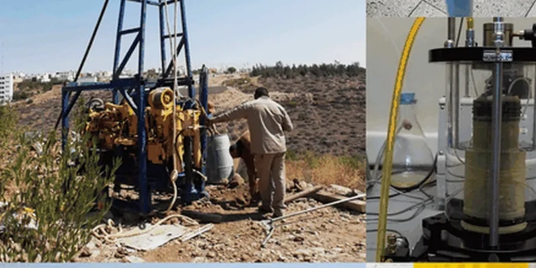

En Valparaíso, proveemos trabajos integrales de geotecnia que abarcan desde la caracterización del subsuelo hasta el diseño de cimentaciones y el monitoreo de obras. Nuestra presencia local nos permite comprender los desafíos únicos de la región, como la interacción entre suelos residuales, rellenos antrópicos y la actividad sísmica. Trabajamos con equipos calibrados y metodologías que cumplen estrictamente con la normativa chilena, garantizando informes técnicos confiables. Ya sea para proyectos de infraestructura urbana, vial o minera, nuestro enfoque multidisciplinario asegura soluciones seguras y eficientes. Conozca más sobre nuestras capacidades en columnas de grava y estabilización con cal y cemento.

Características del servicio en Valparaíso
Demostración en campo
Factores críticos del terreno en Valparaíso
Nuestra firma cuenta con una trayectoria consolidada en la región de Valparaíso, respaldada por un equipo de ingenieros especializados en geotecnia sísmica y suelos complejos. Disponemos de un laboratorio calibrado que realiza ensayos de granulometría, límites de Atterberg y compresión triaxial, entre otros. Coordinamos estrechamente con contratistas locales y autoridades municipales para agilizar permisos y garantizar el cumplimiento de la normativa. Nuestros informes, basados en datos de campo precisos y modelos numéricos avanzados, proporcionan soluciones adaptadas a las condiciones reales del terreno. Para más detalles sobre técnicas específicas, visite nuestra sección de vibrocompactación y tablestacas.
¿Necesita una evaluación geotécnica?
Respuesta en menos de 24h.
WhatsApp directo: +56 9 7709 2993La forma más rápida de cotizar
Email: contacto@geotecnia1.com
Nuestros servicios
Preguntas más comunes
¿Cuáles son los principales desafíos geotécnicos en Valparaíso?
Los desafíos más comunes incluyen la inestabilidad de taludes en laderas empinadas, la presencia de suelos residuales con alta plasticidad, y el riesgo de licuefacción en depósitos arenosos cercanos a la costa. Además, los rellenos artificiales y la actividad sísmica requieren análisis detallados para garantizar la seguridad de las cimentaciones.
¿Qué tipo de estudios geotécnicos se requieren para construir en la zona costera de Valparaíso?
Para proyectos costeros, es fundamental realizar estudios de mecánica de suelos que incluyan ensayos de penetración estándar (SPT), sondeos eléctricos verticales (SEV) para evaluar la profundidad del basamento rocoso, y análisis de licuefacción. También se recomienda monitorear el nivel freático y realizar pruebas de permeabilidad.
¿Qué normativa chilena regula los estudios de suelos en Valparaíso?
La normativa principal es la NCh 1537 para cimentaciones, la NCh 433 para diseño sísmico y el DS 60 para estudios de suelos. Además, se aplican la normativa técnica aplicable para ensayos específicos, como la NCh 3392 para SPT y la NCh 1517 para clasificación de suelos. Es obligatorio que los informes sean firmados por un ingeniero civil con expertise en geotecnia.
¿Cómo afecta la topografía de Valparaíso al diseño de cimentaciones?
La topografía irregular obliga a realizar cortes y rellenos, lo que puede alterar la estabilidad del terreno. Es común encontrar suelos de diferente competencia en un mismo sitio, por lo que se requieren estudios detallados por sectores. Las cimentaciones profundas, como pilotes, suelen ser necesarias en laderas para alcanzar estratos resistentes y evitar asentamientos diferenciales.